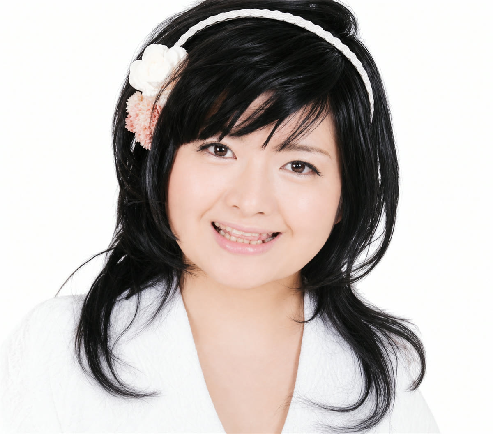
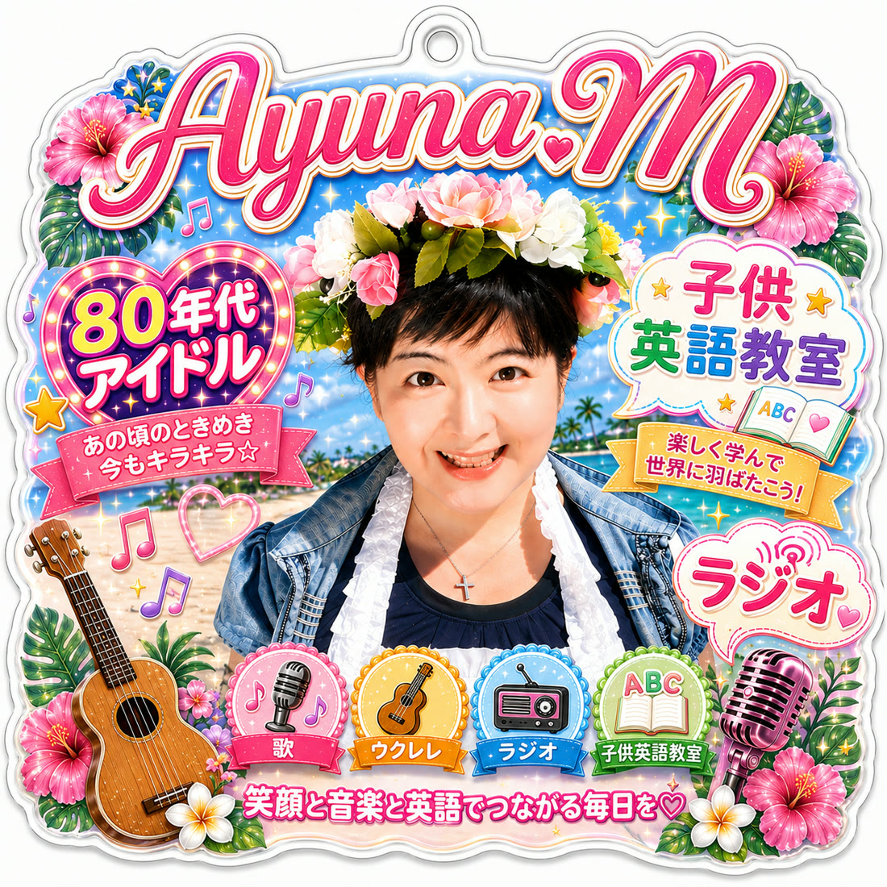

歌
ライブやイベントで歌います。80年代のアイドルの曲、沖縄の歌、ウクレレとサンレレの弾き語り。月に1回以上、どこかの会場に立っています。
Singer / Ukulele & Sanrere / Radio


About Ayuna
沖縄を拠点に、ライブやイベントで歌っています。はじめの10年は松田聖子さんの曲だけを、いまは80年代のアイドルの曲や沖縄の歌も歌っています。
2025年の11月からウクレレを習いはじめ、いまはサンレレでシマ歌も弾き語ります。ラジオでは番組を担当し、子どもたちには英語を教えています。歌う人であり、伝える人であり、教える人でいたいと思っています。
紫あゆな
これまでの歩みを見るThree Pillars
「歌と、エンタメ・教育、ラジオは情報発信」。ご本人の言葉のとおりに並べています。
ライブやイベントで歌います。80年代のアイドルの曲、沖縄の歌、ウクレレとサンレレの弾き語り。月に1回以上、どこかの会場に立っています。
子ども向けのイベントで歌い、英語の教室も開いています。楽しいから覚える、覚えるから好きになる。その順番を大切にしています。
オキラジ、FM読谷、FMコザの3局で番組を担当しています。沖縄の音楽やイベントのことを、声にのせてお届けしています。各分野でご活躍のみなさまや、地域のお店・事業者の方をゲストにお招きし、お仕事への想いや沖縄の魅力を伺っています。ご出演のご相談も、どうぞお気軽にお寄せください。
Services

地域のイベント、企業の催し、子ども向けの企画へ出演します。

やさしい音色で、会場をやわらかい空気に包みます。

オキラジ・FM読谷・FMコザの3局で、番組を担当しています。
English Class
わたしは中学2年で英語がきらいになりました。だからこそ、同じ思いをする子をつくりたくないのです。
遊びながら音から入って、いつのまにか読めるようになる。外国の教材やカード遊びから始めて、読み書き、そして英検の対策へとつなげていきます。ご家庭での家庭教師と、園でのレッスンをしています。これから、学校訪問も広げていきたいと思っています。
英語教室のご案内を見る